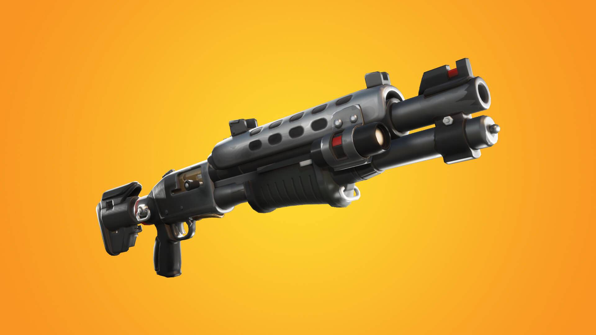

La Escopeta Táctica es una de las armas más equilibradas que han existido en Fortnite. A diferencia de la Pump, esta escopeta destaca por su rapidez de disparo, permitiendo realizar varios ataques consecutivos en poco tiempo.
Gracias a su amplia dispersión de perdigones, resulta más sencilla de utilizar para jugadores principiantes y también para quienes prefieren un estilo de combate agresivo. Esto la convirtió en una de las opciones más utilizadas durante numerosas temporadas.
Su capacidad para mantener una presión constante sobre el enemigo hace que sea especialmente efectiva en espacios cerrados y durante enfrentamientos rápidos. Aunque su daño individual es menor que el de la Pump, la velocidad con la que puede disparar compensa esta diferencia.
La Escopeta Táctica ha sido una de las favoritas de la comunidad debido a su facilidad de uso, confiabilidad y gran rendimiento en distintas situaciones de combate.
Dispara más rápido que la mayoría de las escopetas.
Ideal para jugadores que buscan consistencia en cada enfrentamiento.
Permite reaccionar rápidamente y mantener la presión sobre el rival.
Una de las armas más utilizadas en diferentes temporadas del juego.